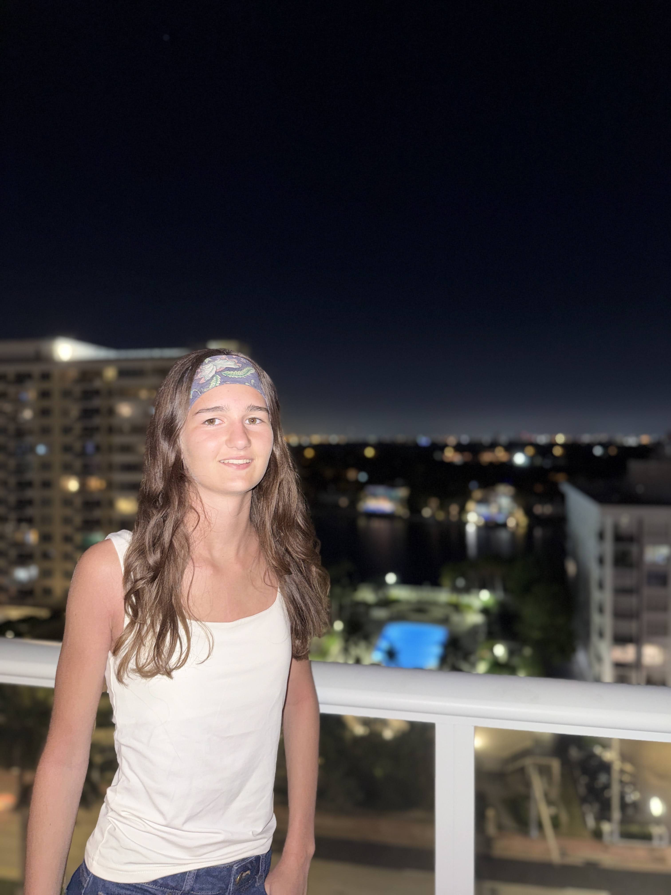

Sarah Scamps

23, rue d’Hem, 59491 Villeneuve d’Ascq
Téléphone : 06 36 17 76 65
Email : sarah.scamps59@gmail.com
Projet Professionnel
Je souhaiterais faire un métier qui peut aider les sportifs à être plus performants.
Expérience
- Fevrier 2026 : Stage d'observation de Seconde au Centre médicale DocForSport, Villeneuve D'ascq
- Décembre 2024 : Stage d’observation de Troisième au Cabinet de Kiné Fauquenoy, Neuville en Ferrain
- Depuis 2024 : Babysittings
Formation
-
Septembre 2025 à maintenant : Lycée La Salle, Lille
Site de l'établissement
- Janvier 2025 : Collège Saint Adrien, Villeneuve d’Ascq - Diplôme 1er Secours
- Septembre 2021 à juin 2025 : Collège Saint Adrien, Villeneuve d’Ascq - Brevet des collèges
Compétences
- Sens des responsabilités
- Esprit d’équipe et entraide
- Capacité d’adaptation
- Sérieuse
- Sens du contact humain et écoute
- Maîtrise les outils numériques de base
Passions
- Scoutisme
- Athlétisme
- Gymnastique
- Cuisine
- Voyages
Langues
Anglais, Espagnol (niveau scolaire)